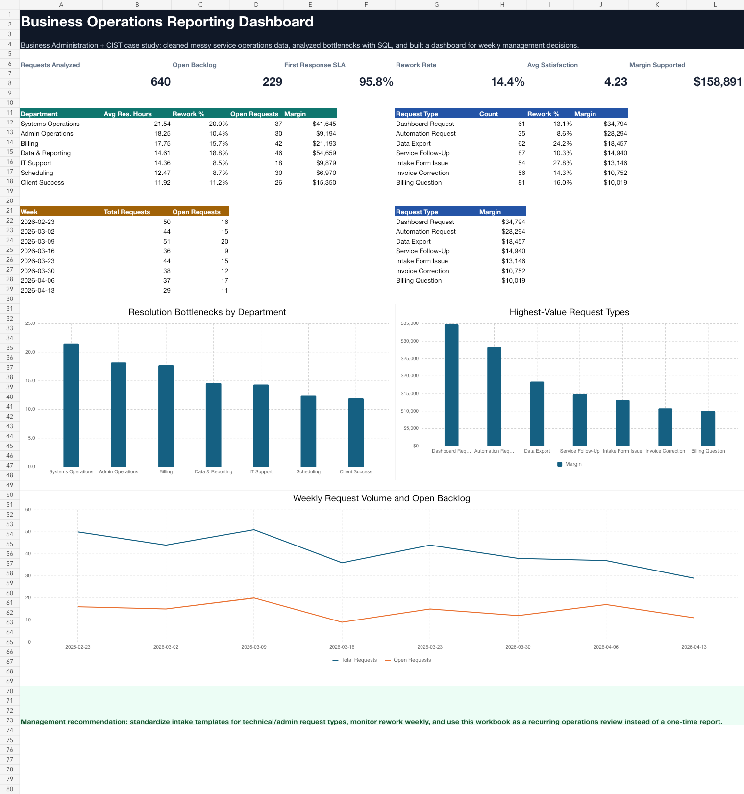

Project
Business Operations Reporting & Automation System
A repeatable reporting workflow that cleans messy operations data with Python, analyzes KPIs with SQL, and produces dashboard-ready outputs for weekly management review.

Outcomes
- 640 cleaned records after deduplication
- 95.8% first-response SLA performance
- $158,891 estimated margin supported